Restaurant · 1er étage · l'îlot au-dessus de l'entrée, à la place du bloc : quatre propositions
25/11/2026 · les trois colonnes sont retenues pour le vide ; chaque proposition est modélisée à l'échelle
Tu as retenu les trois colonnes et retiré le bloc. À sa place, voici quatre décors végétaux,
modélisés à l'échelle. Chacun est vu de trois façons : depuis la mezzanine, de l'autre côté du vide ; depuis la salle
du rez-de-chaussée, en levant les yeux ; et sur la carte, dans la vue 3D en fantôme. Aucune plante ne touche les
colonnes ni les murs de l'accueil du bas.
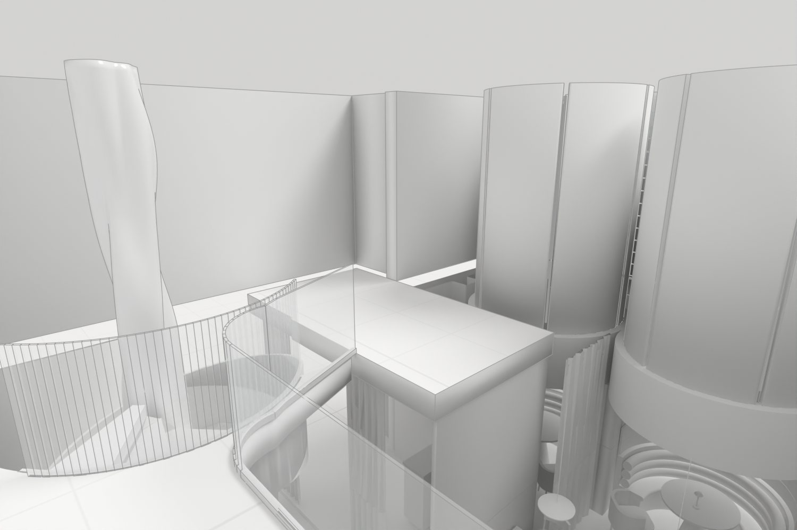
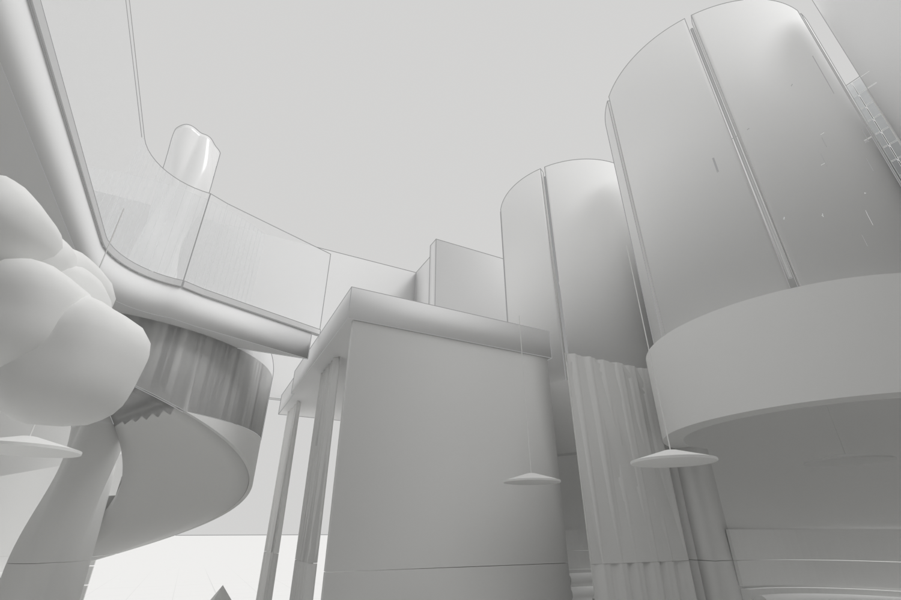
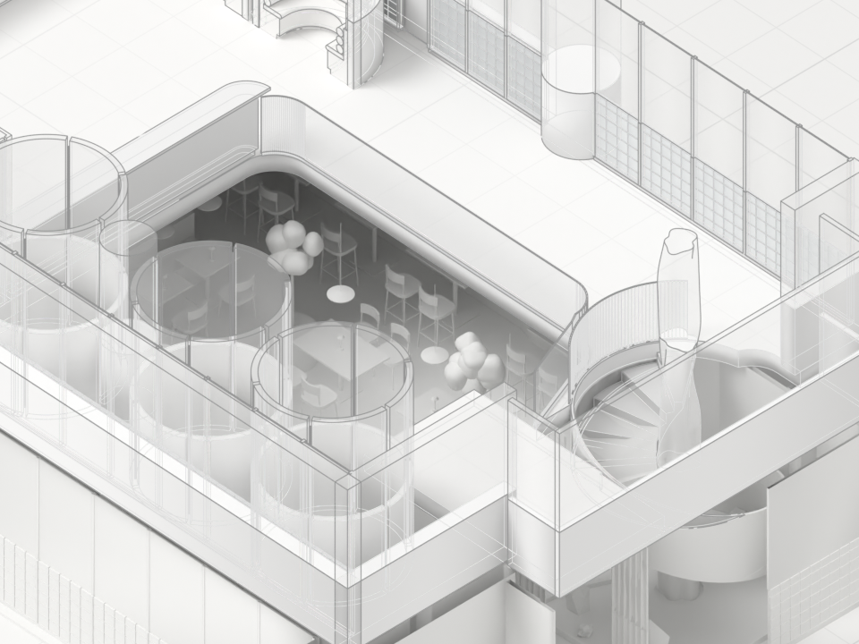
B0 · Sans le bloc, l'îlot nu. Une fois le bloc retiré, il reste un îlot de 2,1 × 4,0 m au-dessus de l'entrée : c'est le toit de l'accueil du rez-de-chaussée, entouré par le vide sur trois côtés. On n'y accède pas depuis la mezzanine. C'est un endroit à regarder, d'en haut comme d'en bas, et donc la bonne place pour un décor.
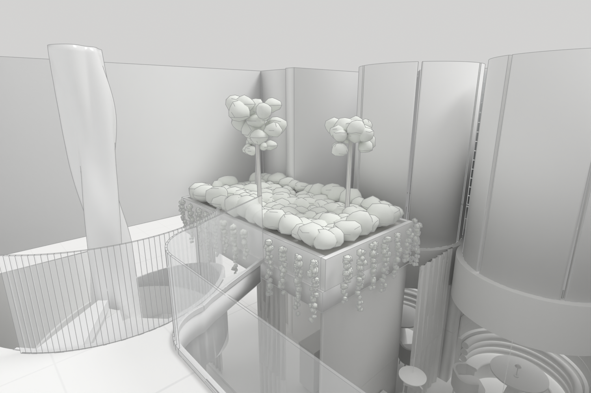
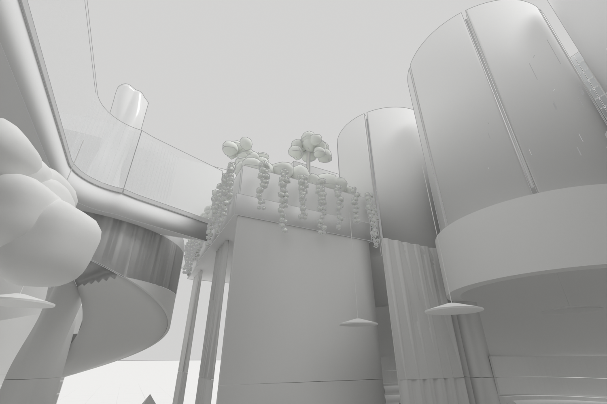
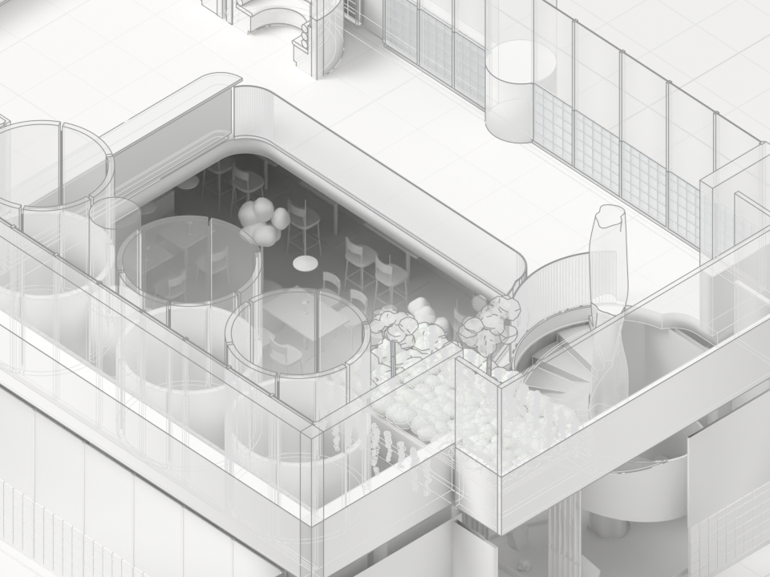
B1 · Le jardin suspendu, un massif et trois petits arbres. Un bac en bois qui suit le bord de l'îlot. Dedans, un massif dense et trois petits arbres, de 1,6 à 2,1 m. Les plantes retombent d'un mètre dans le vide sur les trois côtés. Vu du bas, on voit le bord vert de l'îlot ; vu de la mezzanine, un jardin posé au milieu du vide, à côté des colonnes.
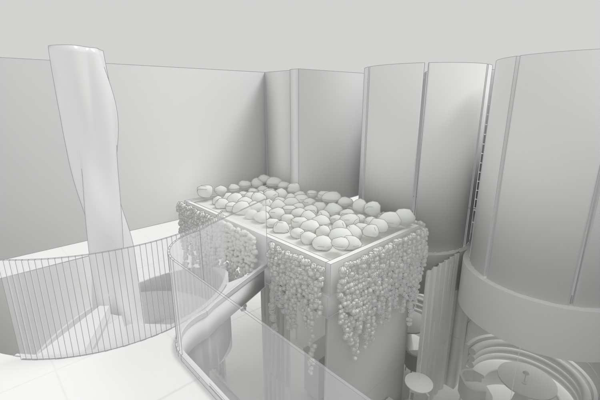
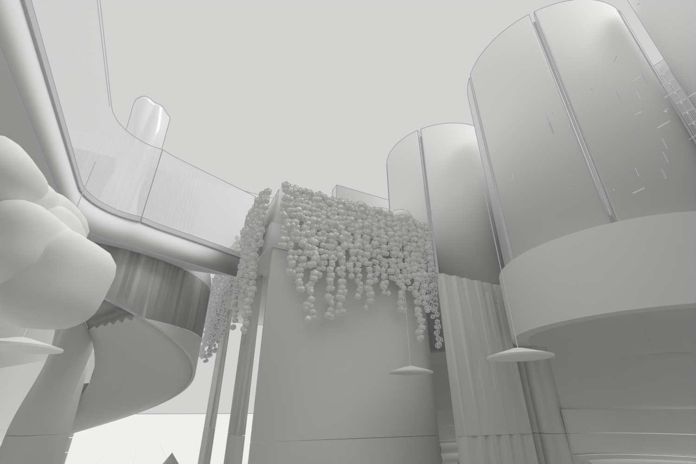
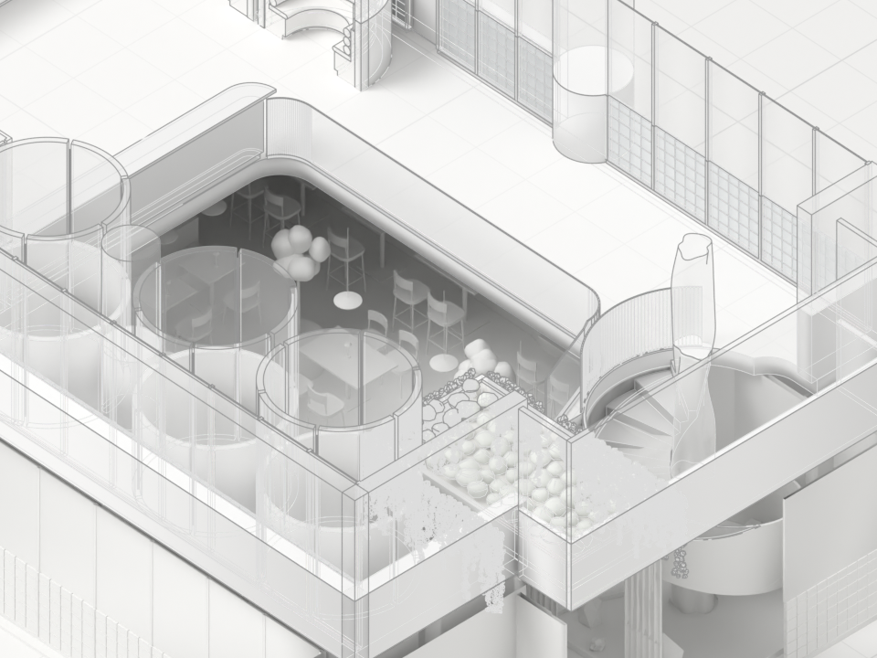
B2 · Le rideau végétal, des plantes retombantes jusqu'à 1,6 m. Le même bac, plus bas, et des plantes retombantes serrées tous les 12 cm. Elles tombent jusqu'à 1,6 m dans la double hauteur, comme un rideau vert, et s'arrêtent à 2,15 m au-dessus du sol du bas. C'est un clin d'œil aux rideaux du lieu. On le voit surtout d'en bas, depuis la salle et l'entrée.
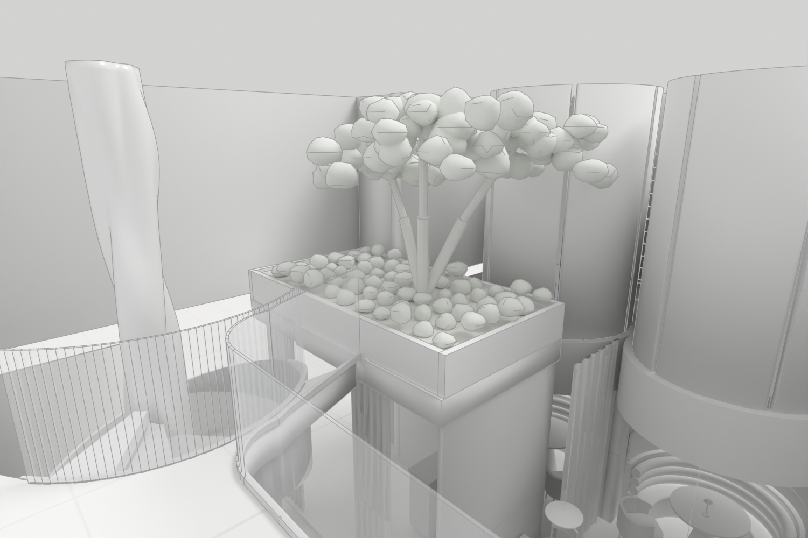
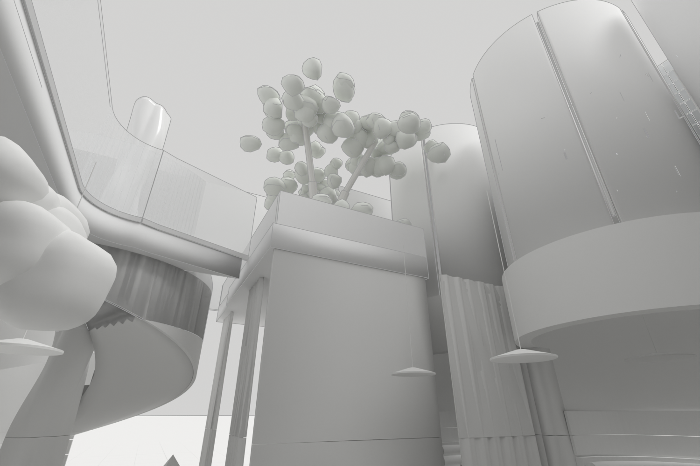
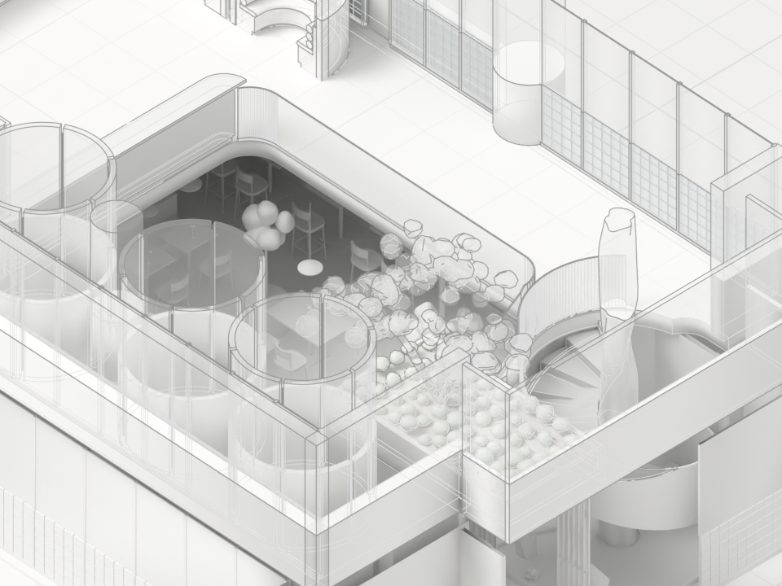
B3 · Le grand arbre, un arbre à plusieurs troncs. Un seul arbre à trois troncs, planté dans le bac. Sa couronne, à hauteur des yeux de la mezzanine et au-dessus, s'étend sur le vide à côté des trois colonnes, sans les toucher. Un couvre-sol à son pied. C'est le pendant vivant des colonnes.
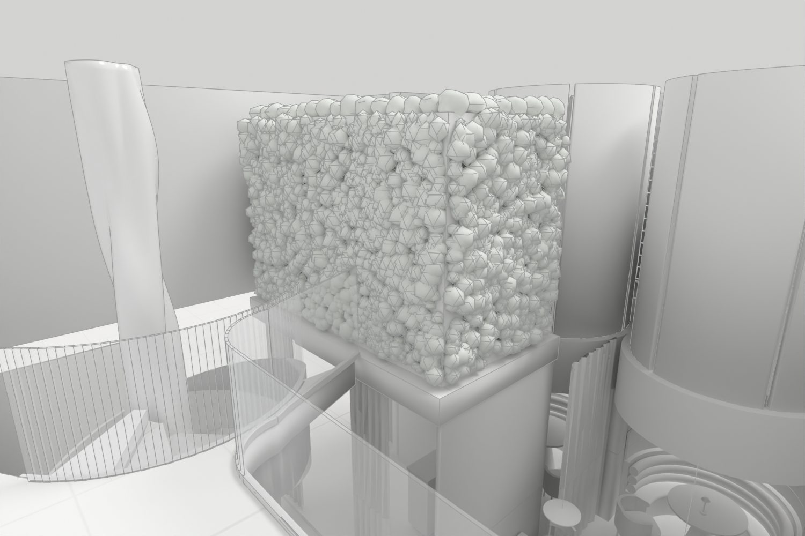
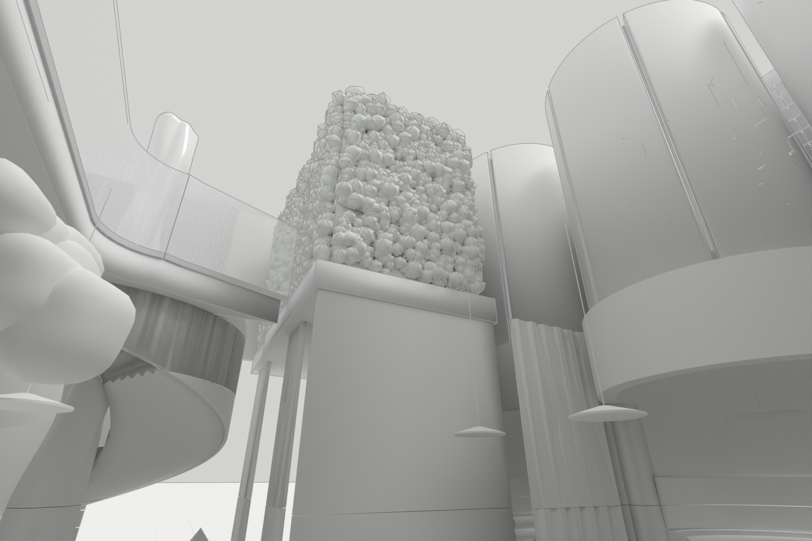
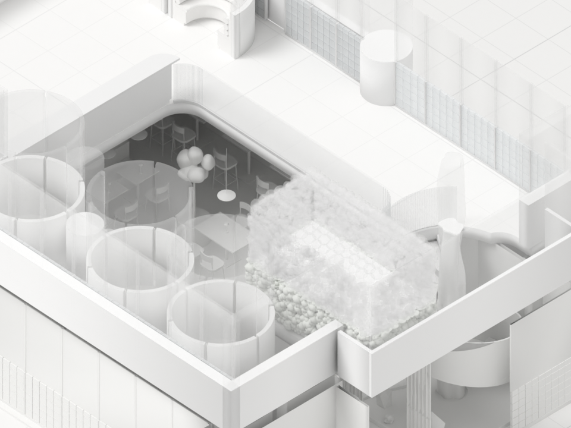
B4 · Le mur végétal, le volume du bloc, mais planté. On garde le volume du bloc, sur 2,60 m, mais ses quatre faces sont couvertes de plantes, comme un mur végétal, et son dessus aussi. Il cache toujours le haut de l'entrée, mais il devient vert.
Questions
Laquelle des quatre propositions pour l'îlot ? On peut aussi en combiner deux : par exemple le grand arbre de B3 avec les retombées de B1.
Une fois le choix fait, je l'intègre au modèle avec les trois colonnes, puis je passe à l'export du 1er étage et au changement d'étage dans la carte. Ça te va ?